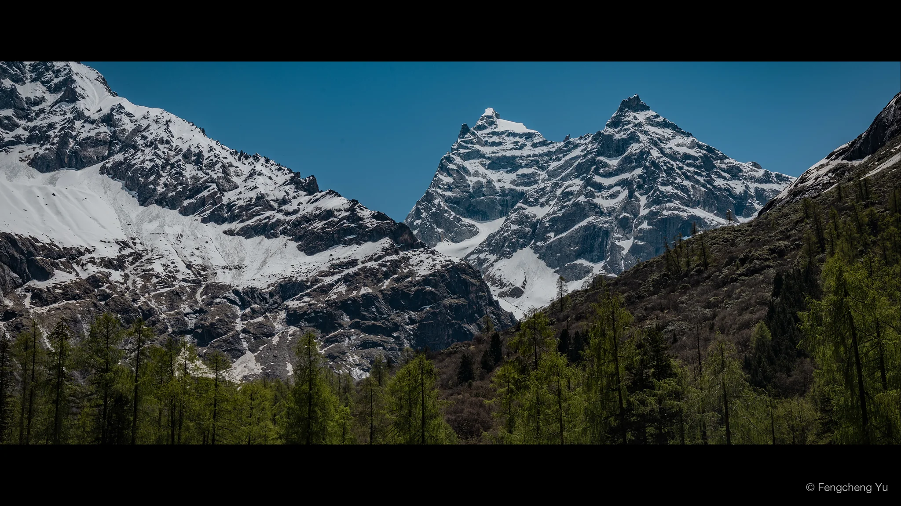
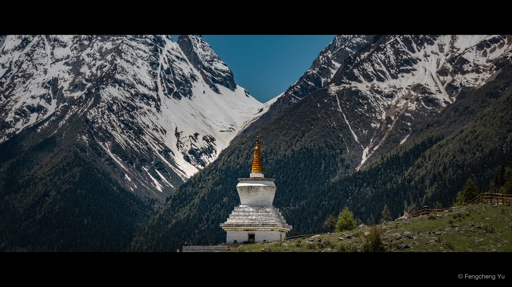
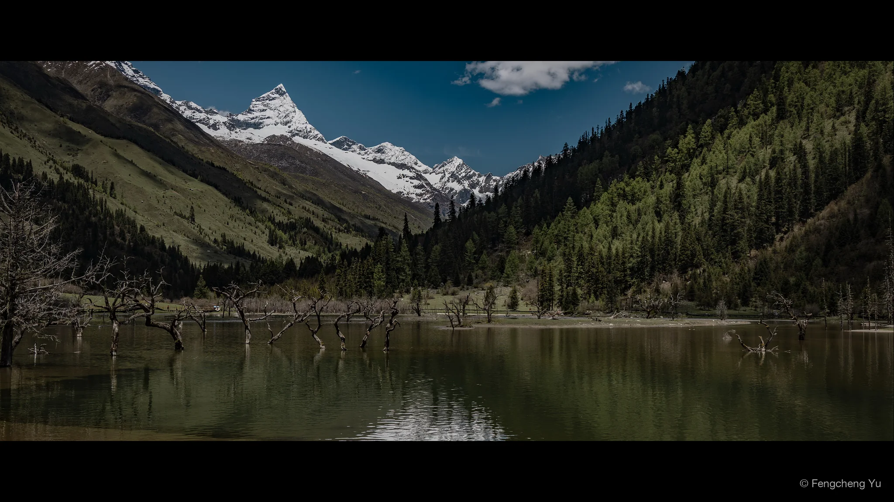
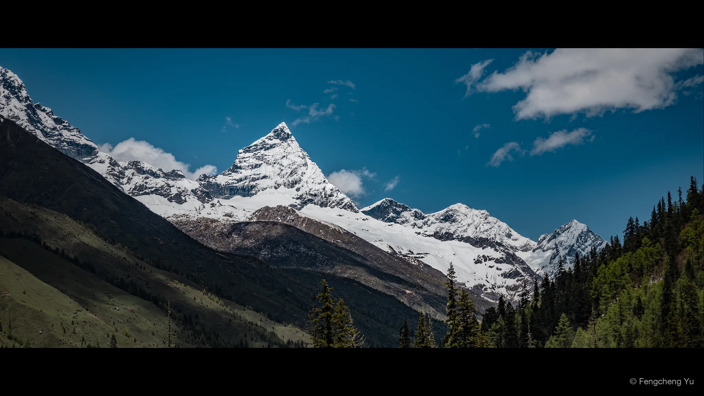
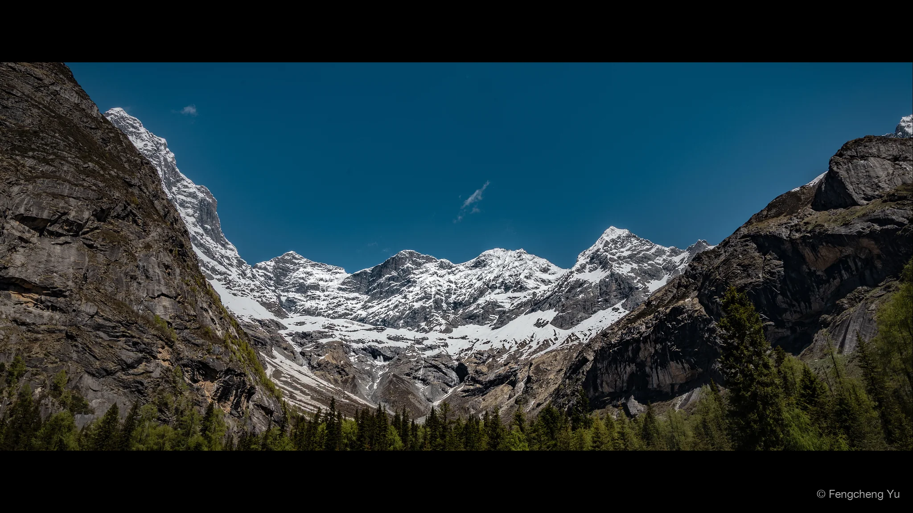
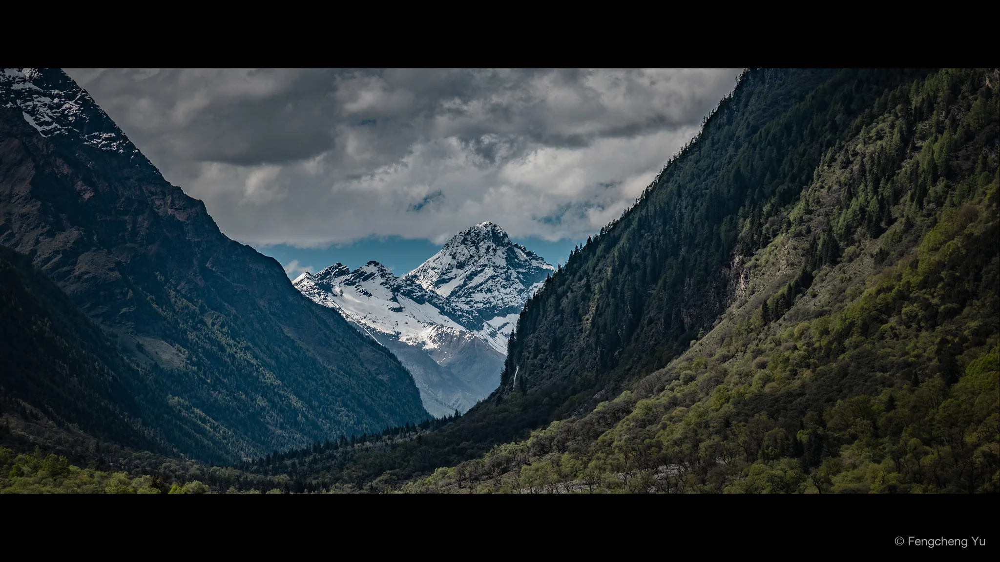

Siguniang Mountain


May 30, 2025
Canon EOS R6 Mark II · RF24-105mm F4 L IS USM · 50mm · f/14 · 1/160s · ISO 100


May 30, 2025
Canon EOS R6 Mark II · RF24-105mm F4 L IS USM · 83mm · f/20 · 1/100s · ISO 100


May 30, 2025
Canon EOS R6 Mark II · RF24-105mm F4 L IS USM · 35mm · f/8 · 1/500s · ISO 100


May 31, 2025
Canon EOS R6 Mark II · RF24-105mm F4 L IS USM · 72mm · f/9 · 1/500s · ISO 100


May 31, 2025
Canon EOS R6 Mark II · RF24-105mm F4 L IS USM · 24mm · f/14 · 1/160s · ISO 100


May 31, 2025
Canon EOS R6 Mark II · RF24-105mm F4 L IS USM · 105mm · f/18 · 1/200s · ISO 100